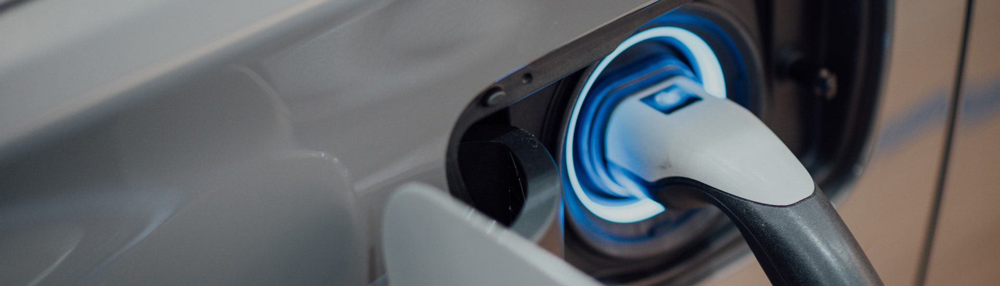
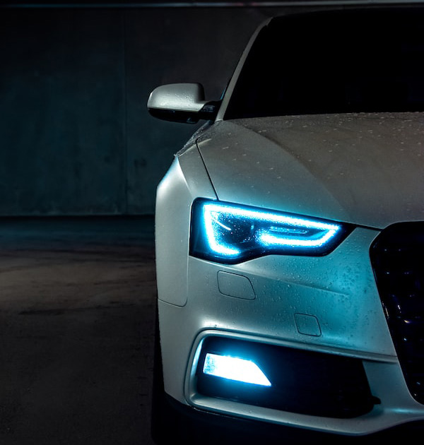

자동차배터리
Automotive Battery
배터리는 자동차의 지속가능한 혁신을 위한 열쇠입니다
삼성SDI는 친환경, 청정에너지 솔루션을 개발, 생산하고 있습니다.
특히 전기자동차에 요구되는 독창적이고 혁신적인 제품을 지속적으로 개발하고 있습니다.
특징 및 장점
-
- 소재 선택의 탄력성
- 가스압력에도 튼튼함 유지
다양한 소재 적용 가능
-
- 최고 수준의 안전장치
- 독자적인 안전장치 개발
운전자들의 안전 보장
-
- 장기간을 위한 높은 내구성
- 장기적인 성능의 안정성 보장
용량 증대 및 높은 성능 유지
-
- 외부 케이스의 모듈화
- 적층형 알루미늄으로 제작
패키징 공간의 최소화
Business Info
-
배터리의 시대가 열렸습니다. 전기자동차 분야에서 배터리의 진보는 지난 십여년간 모바일 기기에서의 변화와 비슷한 양상을 보일 것으로 전망됩니다. 90년대 초, 벽돌만했던 휴대폰의 배터리는 불과 30분밖에 지속되지 않았습니다. 그러나 지금의 휴대폰은 두께가 1cm도 안되지만 배터리는 8시간 이상 사용할 수 있습니다. 최초의 전기자동차는 내연기관 자동차보다 먼저 개발되었습니다. 그러나 당시 배터리 기술의 한계 때문에 시장의 메인스트림이 되지 못했습니다. 하지만 이제 자동차 시장에 변화가 시작되고 있습니다. 이러한 변화의 배경에는 리튬이온 배터리가 있습니다. 리튬이온 배터리는 기존의 납, 니켈-카드뮴, 니켈-수은 배터리보다 에너지 밀도는 크게 향상 되었고, 사용시간은 길어졌으며, 안전성도 높아졌습니다. 이처럼 배터리 기술이 진보하면서, 완성차 제조사들은 다양한 전기자동차를 새롭게 선보이고 있습니다. 전기자동차 시대가 본격적으로 찾아온 것 입니다.
 -

전지구적인 다양한 변화의 양상 속에서 과연 우리는 무엇을 중요하게 여겨야만 할까요? 늘 가까이 있어 소홀히 여겨 왔지만, 우리가 오래도록 지켜야만 하는 소중한 것들이 있습니다. 이를테면 맑은 공기, 푸른 숲과 같은 자연이 그렇습니다. 모든 세대에 걸쳐 누려야하는 아름답고 깨끗한 자연환경을 위해 오늘도 삼성SDI는 배터리의 혁신을 선도하고 있습니다. 날로 증가하는 CO2 배출로 인한 지구온난화는 현존하는 그 어떤 에너지원보다 친환경적인 배터리 기술에 대한 관심을 증가시키고 있습니다.
인류 역사상 주된 변화는 새로운 에너지원의 출현과 함께 나타났습니다. 배터리는 또 한차례 세상을 변화 시킬 것 입니다. 그리고 삼성SDI는 이러한 배터리의 무한한 잠재력을 이끌어 내고자 합니다. 새롭고 혁신적인 에너지 솔루션의 글로벌 리더 삼성SDI는 모바일기기용 배터리 분야에서 축적해 온 경험과 노하우를 바탕으로 전기자동차를 위한 고효율, 고에너지 밀도의 배터리를 개발하고 있습니다.
Automotive
battery
- Innovation
- 우리의 혁신으로 고객에게 전기자동차의 꿈을 앞당깁니다.
- 여러분이 어떤 상상을 하시든 삼성SDI 배터리의 새로운 혁신이 자동차 제조자와 내일의 운전자들을 위하여 그러한 꿈들을 현실로 만들어 드립니다.
-
- 뛰어난 생산력과 원가 절감
- 생산의 자동화를 포함한 생산단계에서의 기술 변화로, 전반적인 배터리 원가는 절감될 수 있으며 수율과 생산 속도가 증가됩니다. 삼성SDI가 공급하는 각형 리튬 이온 배터리는 상대적으로 짧은 생산 준비 기간과 높은 공정 안정성으로 타 배터리 업체에 비해 생산성이 높고 원가가 절감됩니다.
-
- 세심한 품질관리를 통한 타의 추종을 불허하는 안전관련 실적
- 리튬-이온 배터리의 생산은 다양한 재료, 화합물, 하드웨어 및 소프트웨어로 구성되는 매우 복합적인 공정이며 고도의 품질관리를 필요로 합니다. 삼성SDI는 설계 및 생산단계에서의 엄격한 규율에 힘입어 품질관련 사고가 없었던 유일한 회사임을 자신있게 말할 수 있습니다.
-
- 셀 기술 기반의 최상급 배터리 시스템
- 삼성SDI의 세계를 선도하는 셀 전문기술과 Samsung SDI Battery Systems의 자동차 업계 실적 및 배터리 팩 시스템 전문지식을 융합함으로써, 우리는 우리의 고객들에게 향상된 제품 구성을 제공하며 개발 부서와 생산 부서 간의 밀착 협력으로 최적화된 성능과 원가 시너지를 구현합니다.
-
- 미래 배터리 기술을 위한 광범위한 연구 개발
- 우리의 선진 배터리 전문 기술과 여타 삼성그룹 계열사들과의 협력적 기술 개발 구조는 우리가 세계의 선도자로서 자리잡게 된 이유입니다. 삼성SDI는 더 좋은 동력발생 및 구동 성능과 더 확장된 전기구동 주행 거리를 제공할 현재 및 차세대 리튬 이온 배터리를 개발하고 있습니다.
- Product
- 우리의 기술은 전기자동차 시대를 앞당기는 원동력입니다.
- 삼성SDI는 첨단 기술을 바탕으로 더 높은 효율과 더 큰 용량을 가진 에너지 솔루션을 지속적으로 개발하여 전세계의 대규모 자동차 완성업체에 공급하고 있습니다.
-
- 자동차 혁명의 중심에 위치하다 : 배터리 개요
- 전기자동차를 구동하는 배터리 팩은 직렬 및 병렬로 연결된 각각의 배터리 셀과 모듈로 구성되어 있습니다. 셀은 배터리의 가장 작은 단위이며, 음극, 양극, 전해질 및 분리막의 4가지 핵심 요소로 이루어져 있습니다. 배터리 셀의 특성이 전기자동차의 전반적인 성능에 중심적 역할을 합니다. 셀은 각형, 원통형, 폴리머 등 여러 형태가 있으며, 삼성SDI는 자동차에 쓰이는 각형 배터리 셀을 제공합니다. 모듈은 서로 직렬 혹은 병렬로 연결된 다수의 셀들로 이루어져 있으며, 기계적 구조물 안에 매입됩니다. 삼성SDI의 배터리 셀은 소형으로 적층가능하게 설계되었기 때문에 셀의 모듈화가 용이하고 다양한 다른 구성을 하기에 이상적입니다. 배터리 팩은 다수의 모듈들을 배터리 관리 시스템과 열관리 시스템의 센서와 컨트롤러를 포함하여 서로 직렬 혹은 병렬로 연결하여 조립되며 케이스 구조물에 매입되어 각 자동차 모델에 특화된 배터리 제품이 됩니다.
-
- Prismatic Lithium-ion Battery Cell
- 삼성SDI는 완벽한 배터리 셀 플랫폼 구성을 개발하였으며 진보된 자동차 용 배터리 셀을 양산하고 있습니다.
-
- Battery Module
- 삼성SDI는 높은 생산성과 유연성을 보여주는 표준화된 배터리 모듈을 생산합니다. 삼성SDI의 배터리 모듈은 성능, 안전 그리고 긴 사용 수명을 보장하는 배터리 관리 시스템(BMS, Battery Management System)을 탑재했습니다.
-
- Battery Pack
- 삼성SDI는 자동차에 장착하기 위해 고성능을 지닌 소형의 최적화된 배터리 팩을 개발하며 세계적인 자동차 제조사들과 함께 여러 종류의 프로젝트들을 수행합니다. 성능, 안전 그리고 긴 사용 수명을 보장하는 배터리 관리 시스템(BMS. Battery Management System)이 탑재된 배터리 팩은 가볍고 내구성이 좋은 자동차의 전반적인 성능을 결정하는 핵심적인 부품입니다. 삼성SDI는 고전압 배터리 시스템용 팩 플랫폼을 개발했으며, 현재 글로벌 자동차 완성업체들과 다양한 프로젝트를 추진하고 있습니다.
- Application
- 전기자동차의 미래를 이루어갑니다.
- 삼성SDI에서는 전기동력화를 위한 2차 배터리 기술 개발 및 공급을 통해 자동차의 탄소 배출 저감 및 연비 향상에 기여하고 있습니다.
-
- Pure electric vehicle (EV)
- 순수 전기자동차는 내연기관 없이 오로지 전기 모터에 의해서만 동력을 공급받으며, 가스 배출이 일체 없습니다. 배터리가 바퀴를 구동하기 위한 유일한 에너지원이므로 특정 공간 내에서 높은 에너지 밀도를 가지는 것이 좋습니다. 삼성SDI는 현재 EU 및 미국의 자동차 제조사들에게 단일 부피당 업계 최고 에너지 밀도를 가진 배터리 셀을 공급하고 있습니다. 최적의 수명 성능과 고용량 특성을 지닌 활물질을 채용하고, 활물질 입자 크기를 조절함과 동시에 배터리 구성부품의 혁신을 새롭게 도입하면서 최적화된 배터리를 설계하고 있습니다.
-
- Plug-in Electric Hybrid Vehicle (PHEV)
- 순수 전기자동차와 같이 표준화된 플러그인 하이브리드 자동차용 배터리 셀은 동일한 외관 사이즈에서도 주행거리를 늘릴 수 있게 합니다. 이를 통해 차세대 제품을 적용할 때에도 현재의 패키지 사이즈를 유지하여 전기 모드로 50km 이상을 주행할 수 있습니다.
-
- Hybrid Electric Vehicle (HEV)
- 하이브리드 자동차는 에너지 효율을 극대화하고 환경 오염을 최소화하기 위해 내연기관과 전기 모터를 사용합니다. 일반적인 주행 중에는 주로 엔진이 동력을 공급하며, 배터리는 추가적인 동력이 필요할 때 보조 역할을 합니다. 삼성SDI의 하이브리드 자동차 배터리는 연료 효율을 극대화하고 긴 수명을 갖도록 선도적인 에너지 출력비를 실현하는 고출력을 지향하여 설계됩니다.
-
- Micro-/Mild Hybrid Electric Vehicle (Micro-/Mild HEV)
- 마이크로/마일드 하이브리드 자동차는 정지/출발 시스템을 갖춘 내연기관 자동차의 차세대 버전이며 동력 공급 장치의 전압을 60V 미만으로 유지하여 정지/출발 시스템과 하이브리드 자동차의 장점을 결합한 것입니다. 마이크로/마일드 하이브리드 자동차의 12V /48V 저전압 배터리는 자동차 제조사들에게 점점 더 엄격해지는 이산화탄소 배출 표준에 최소 비용으로 대처할 수 있는 잠재력을 제공합니다. 그리하여 자동차의 전기화로 향하는 과정에서 중간 단계의 솔루션을 제공하는 것입니다. 12V 보조 전원을 장착한 자동차는 향상된 정지/출발 기능을 제공하고 48V 배터리는 출력 보조 같은 추가적인 구동 기능을 제공합니다.
- Partnership
- 전기자동차의 미래를 이루어갑니다.
- 삼성SDI에서는 전기동력화를 위한 2차 배터리 기술 개발 및 공급을 통해 자동차의 탄소 배출 저감 및 연비 향상에 기여하고 있습니다.
-
- 자동차 제조사들과 신뢰와 협업의 문화를 형성
- 삼성SDI는 제품의 상용화와 안전성, 기술 경쟁력을 입증하여 30개 이상의 자동차 전기화 프로젝트에 핵심 배터리 공급자로 선정되었으며 계속해서 참여 프로젝트가 늘어나고 있습니다. 삼성SDI의 배터리는 Fiat 500e(순수 전기자동차), BMW i3(순수 전기자동차), BMW i8(플러그인 하이브리드 자동차)를 비롯해 자동차 제조사들의 다양한 전기자동차에 공급되고 있습니다.
-
- 글로벌 파트너십
- 삼성SDI는 글로벌 자동차 제조사들이 마주한 가장 어려운 도전들을 해결하기 위해 협력하고 있습니다. EU, 미국, 아시아의 많은 중요한 자동차 제조사들이 삼성SDI와 함께하는 프로젝트를 시작했으며, 향후 수년간에 걸쳐 삼성SDI의 배터리로 구동되는 자동차들을 출시할 것입니다. 돌아보면, 삼성SDI가 자동차 업계에 비교적 늦게 진출한 것이 오히려 기회가 되었고, 처음부터 삼성SDI가 자동차 제조사들과 긴밀한 협력을 할 수 있게 만들었습니다: 신제품 개발과 새로운 생산능력 구축은 빈번하고 심도있는 대화가 필요하나, 이런 모든 것들은 단순한 공급자-고객 관계에서는 불가능했습니다. 그래서 삼성은 고객들과 긴밀히 협력해야만 했습니다. 삼성SDI는 모든 프로젝트에 대해 공동 목표를 향한 빠른 추진으로 고객들과의 대화와 상호 신뢰의 문화를 만들어 내는데 성공했다고 자부합니다.
-
- DTM Championship을 통해 BMW와 파트너십 강화
- 삼성SDI는 BMW Motorsport의 자랑스러운 공식 프리미엄 파트너입니다. 2015년5월, 글로벌 자동차 제조사들이 최신 첨단 기술을 선보이는 유럽 최고의 모터스포츠 선수권 대회인 DTM(Deutsche Tourenwagenmeisterschaft, 독일 투어링 카 선수권 대회)에서 삼성SDI의 로고를 부착한 경주용 자동차가 Hockenheimring 경기에서 데뷔하였습니다.
BMW그룹 스폰서십 삼성SDI는 BMW Motorsport 후원을 통해 BMW그룹과 긴밀하고 장기적인 전략적 파트너십을 공고히 하였으며, 동시에 전세계 자동차 업계에 삼성SDI의 브랜드 인지도를 높였습니다.고성능 경주용 자동차의 전기화 삼성SDI는 우리의 기술적 전문지식으로 자동차 업계의 미래에 기여할 부분이 아직도 많으며 우리의 브랜드가 많은 소비자들과 자동차 업계 전반에 걸쳐 긍정적인 영향을 미치길 기대합니다.
Highlights
-
- 디트로이트 2018 참가
- 미국 디트로이트 코보(COBO) 센터에서 열린 '2018 디트로이트 모터쇼'에서 전기차 대중화를 선도할 고용량, 급속충전 혁신 소재와 첨단 제품을 대거 선보였습니다. 20분 급속충전 기술을 접목해 최대 600km까지 주행할 수 있는 전기차용 고에너지 밀도 배터리 셀을 중심으로 전기/플러그인 하이브리드 차량에 적용할 수 있는 다양한 세대별 배터리 셀 라인업을 통해 차별화된 제품 경쟁력을 보여줬습니다.
-
- 헝가리 전기차용 배터리 공장 준공
- 지난 17년 5월,삼성SDI는 헝가리 부다페스트 인근 괴드시에 약 33만㎡ 규모로 약 5만대 분량의 전기차용 배터리를 생산할 수 있는 공장을 준공했습니다. 헝가리 공장은 2018년 2분기 부터 본격 양산을 시작할 계획이며, 해당 공장의 준공으로 물류비 절감은 물론 유럽 고객들에 대한 서비스를 훨씬 더 강화할 수 있게 되었습니다. 헝가리 공장 준공으로 삼성SDI는 울산, 중국 시안과 함께 글로벌 전기차용 배터리 3각 생산 체제를 완성하게 되었습니다.